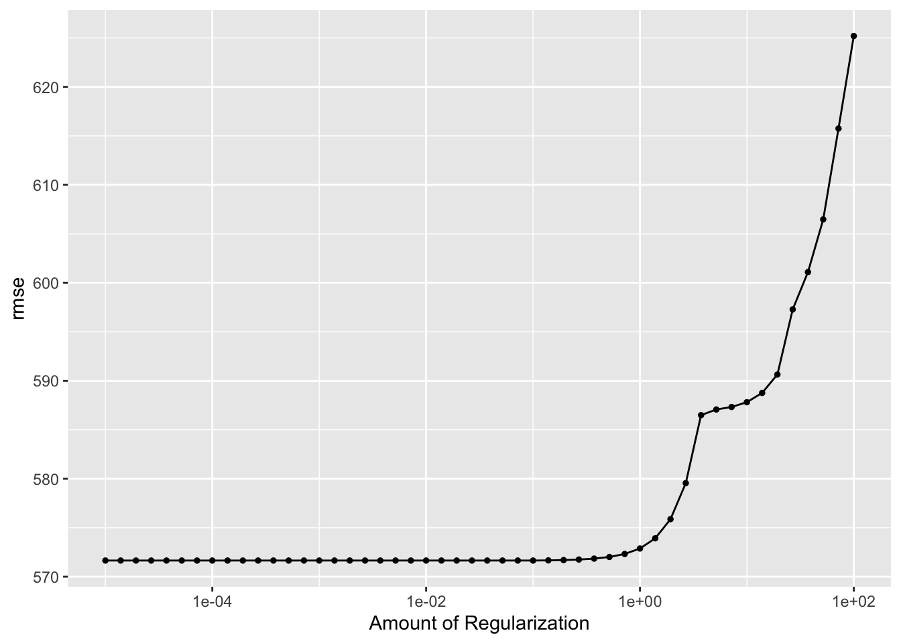
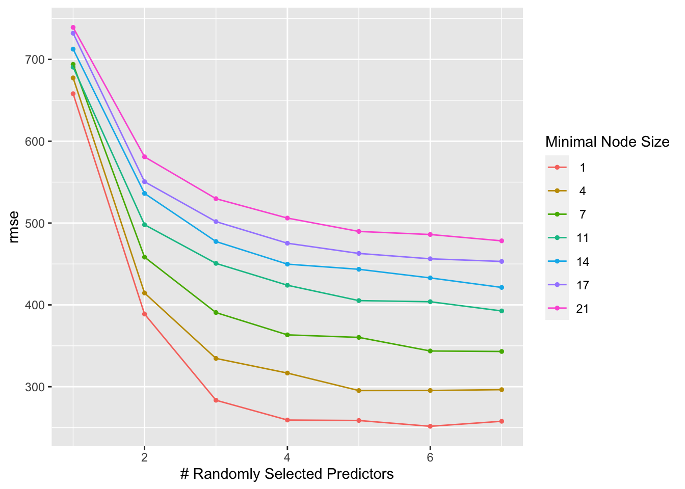

This analysis builds upon the fitting exercises conducted in Week 8 and Week 10. It utilizes the cleaned data, including the variable ‘RACE’ from the Week 8 exercise.
Setup
First, required packages are installed and loaded.
The following object is masked from 'package:yardstick':
spec
The following object is masked from 'package:scales':
col_factor
library(dplyr) #for data processing/cleaninglibrary(tidyr) #for data processing/cleaninglibrary(skimr) #for nice visualization of data library(here) #to set paths
here() starts at /Users/mutsa_n/Desktop/MADA-course/mutsanyamuranga-MADA-portfolio
library(gtsummary)# for summary tables
#StandWithUkraine
Attaching package: 'gtsummary'
The following objects are masked from 'package:recipes':
all_double, all_factor, all_integer, all_logical, all_numeric
library(patchwork) #for combine plotslibrary(ranger) #for Random Forest modellibrary(glmnet) #for Lasso model
Loading required package: Matrix
Attaching package: 'Matrix'
The following objects are masked from 'package:tidyr':
expand, pack, unpack
Loaded glmnet 4.1-8
library(rpart.plot) # for visualizing a decision tree
Loading required package: rpart
Attaching package: 'rpart'
The following object is masked from 'package:dials':
prune
library(vip) # for variable importance plots
Attaching package: 'vip'
The following object is masked from 'package:utils':
vi
library(parsnip)library(yardstick)
#Setting random seedset.seed(1234)#Load in datacleaned_mavo <-readRDS("mavoglurant.rds")
Processing
I will begin by processing the data. In looking through the data we must assess what data encodes for RACE.
Y DOSE AGE SEX RACE
Min. : 826.4 Min. :25.00 Min. :18.00 1:104 1 :74
1st Qu.:1700.5 1st Qu.:25.00 1st Qu.:26.00 2: 16 2 :36
Median :2349.1 Median :37.50 Median :31.00 7 : 2
Mean :2445.4 Mean :36.46 Mean :33.00 88: 8
3rd Qu.:3050.2 3rd Qu.:50.00 3rd Qu.:40.25
Max. :5606.6 Max. :50.00 Max. :50.00
WT HT
Min. : 56.60 Min. :1.520
1st Qu.: 73.17 1st Qu.:1.700
Median : 82.10 Median :1.770
Mean : 82.55 Mean :1.759
3rd Qu.: 90.10 3rd Qu.:1.813
Max. :115.30 Max. :1.930
The coding for RACE is a bit confusing so we will feature engineer “7” and “88” into a new category “3”.
# Convert the factor variable to charactercleaned_mavo$RACE <-as.character(cleaned_mavo$RACE)# Replace values 7 and 88 with 3cleaned_mavo$RACE[cleaned_mavo$RACE =="7"| cleaned_mavo$RACE =="88"] <-"3"# Convert the variable back to a factorcleaned_mavo$RACE <-factor(cleaned_mavo$RACE)#Check RACE variabletable(cleaned_mavo$RACE)
1 2 3
74 36 10
Next, I will create a correlation plot of the continuous variables(those coded as numerical objects within the data set). The correlation matrix quantifies the strength and direction of the linear relationships between these variables. It helps identify potential multi-collinearity issues and informs feature selection for modeling purposes.
# Select only the continuous variables from the datasetcontinuous_vars <- cleaned_mavo[, sapply(cleaned_mavo, is.numeric)]# Calculate the correlation matrixcorrelation_matrix <-cor(continuous_vars)# Plot the correlation matrix as a heatmaplibrary(ggplot2)library(reshape2)
Attaching package: 'reshape2'
The following object is masked from 'package:tidyr':
smiths
# Melt the correlation matrix for plottingmelted_correlation <-melt(correlation_matrix)# Plot the heatmapmavo_corplot <-ggplot(data = melted_correlation, aes(Var1, Var2, fill = value)) +geom_tile(color ="white") +scale_fill_gradient2(low ="blue", high ="red", mid ="white", midpoint =0, limit =c(-1, 1), space ="Lab", name="Correlation") +theme_minimal() +theme(axis.text.x =element_text(angle =45, vjust =1, size =10, hjust =1)) +coord_fixed()# Print the correlation matrixprint(correlation_matrix)
Y DOSE AGE WT HT
Y 1.00000000 0.71808396 0.01256372 -0.2128719 -0.15832972
DOSE 0.71808396 1.00000000 0.07201600 0.1012319 0.01877994
AGE 0.01256372 0.07201600 1.00000000 0.1196740 -0.35185806
WT -0.21287194 0.10123185 0.11967399 1.0000000 0.59975050
HT -0.15832972 0.01877994 -0.35185806 0.5997505 1.00000000
#Saving the figure in the foldercorplot_file <-here("ml-models-exercise", "correlation_plot.png")ggsave(filename = corplot_file, plot=mavo_corplot, bg="white")
Saving 7 x 5 in image
We see that that Y and DOSE as well as HT and WT have relatively strong correlations but neither are greater that .9 so we can leave these variable in.
We will now feature engineer the Ht and WT variables into a new variable called BMI. BMI is measured as BMI= [weight(kg) / height(m)^2]. First we must check to see what units would be reasonable to assume for the data. Then we will combine the categories using these units.
# Filter out HT and WT from the cleaned_mavo datasetcleaned_mavo1 <- cleaned_mavo %>%select(-HT, -WT)
Modeling
The next step is the analysis phase, which involves fitting three models with all predictors.
Linear Model ; LASSO Regression ; Random Forest (RF)
# Set Engine## Linear Enginelm_mavo1model <-linear_reg() %>%set_engine("lm")## Lasso Enginelasso_mavo1model <-linear_reg(penalty =0.1, mixture =0.95) %>%set_engine("glmnet")## Random Forest Enginerf_mavo1model <-rand_forest() %>%set_mode("regression") %>%set_engine("ranger", seed =123)
Here, I define workflows for each model.
# Define the linear model workflowlm_mavo1wflow <-workflow() %>%add_model(lm_mavo1model)# Define the LASSO regression workflowlasso_mavo1wflow <-workflow() %>%add_model(lasso_mavo1model)# Define the random forest workflow with specified random seedrf_mavo1wflow <-workflow() %>%add_model(rf_mavo1model)
The models are then fitted using the workflows and a recipe.
library(ranger)# Define the recipemavo1_recipe <-recipe(Y ~ ., data = cleaned_mavo) %>%step_dummy(all_nominal(), one_hot =TRUE) %>%step_normalize(all_predictors())# Fit the modelsmavo1lin_fit <- lm_mavo1wflow %>%add_recipe(mavo1_recipe) %>%fit(cleaned_mavo)mavo1lasso_fit <- lasso_mavo1wflow %>%add_recipe(mavo1_recipe) %>%fit(cleaned_mavo)mavo1rf_fit <- rf_mavo1wflow %>%add_recipe(mavo1_recipe) %>%fit(cleaned_mavo)
Next step is model prediction and model performance evaluation.
# Make predictions on the entire dataset for each modelmavo1lin_pred <-predict(mavo1lin_fit, cleaned_mavo) %>%bind_cols(cleaned_mavo)mavo1lasso_pred <-predict(mavo1lasso_fit, cleaned_mavo) %>%bind_cols(cleaned_mavo)mavo1rf_pred <-predict(mavo1rf_fit, cleaned_mavo) %>%bind_cols(cleaned_mavo)
Subsequent step is calculation of RMSE for all the models.
#Computing the RMSE for Linear modelmavo1metrics_lm <- mavo1lin_fit %>%predict(cleaned_mavo) %>%bind_cols(cleaned_mavo)%>%metrics(truth=Y, estimate=.pred)#Computing the RMSE for Lasso modelmavo1metrics_lasso <- mavo1lasso_fit %>%predict(cleaned_mavo) %>%bind_cols(cleaned_mavo)%>%metrics(truth=Y, estimate=.pred)#Computing the RMSE for Random Forest modelmavo1metrics_rf <- mavo1rf_fit %>%predict(cleaned_mavo) %>%bind_cols(cleaned_mavo)%>%metrics(truth=Y, estimate=.pred)#print the resultsprint(mavo1metrics_lm)
# A tibble: 3 × 3
.metric .estimator .estimate
<chr> <chr> <dbl>
1 rmse standard 572.
2 rsq standard 0.644
3 mae standard 443.
print(mavo1metrics_lasso)
# A tibble: 3 × 3
.metric .estimator .estimate
<chr> <chr> <dbl>
1 rmse standard 572.
2 rsq standard 0.644
3 mae standard 442.
print(mavo1metrics_rf)
# A tibble: 3 × 3
.metric .estimator .estimate
<chr> <chr> <dbl>
1 rmse standard 354.
2 rsq standard 0.906
3 mae standard 275.
Finally, we create plots to visualize the Observed vs Predictions.
# Plot Preperation## Create a data frame containing observed and predicted valueslin_pred <-bind_cols(cleaned_mavo1, .pred = mavo1lin_pred$.pred)lasso_pred <-bind_cols(cleaned_mavo1, .pred = mavo1lasso_pred$.pred)rf_pred <-bind_cols(cleaned_mavo1, .pred = mavo1rf_pred$.pred)## Creating Labels for Plotslin_pred$label <-rep("Linear Model")lasso_pred$label <-rep("Lasso Model")rf_pred$label <-rep("Random Forest Model")# Create the ggplot figure to graph the predictive values vs the observed value for the three modelsp1 <-ggplot( lin_pred, aes(x = Y, y = .pred, color = label, shape = label)) +geom_point(size=2) +scale_color_manual(values =c("#ff9896"))+geom_abline(intercept =0, slope =1, linetype ="dashed") +# Adding a 45-degree linelabs(x ="Observed Values", y ="Predicted Values", color ="Model", shape ="Model") +xlim(0, 5000) +ylim(0, 5000)+theme_bw()# Viewing the plotp1
The Random Forest model outperformed the other two models in terms of RMSE metrics. Both the Linear model and LASSO yielded similar RMSE values. Examination of the correlation plot revealed that the predictors do not exhibit high collinearity. Given that the penalty for the LASSO model was set at only 0.1, this might not have been sufficient to significantly alter the estimates in comparison to those obtained from the Linear model.
For a visual impression of the the predicted values from all the models I plotted the observed values against all the predicted values. The plots revealed that the predicted values from the Random Forest model are closer to the line of perfect fit than the ones from linear and LASSO models.
Model Tuning
Subsequently, I developed code to fine-tune the LASSO and Random Forest models without employing cross-validation for resampling. To achieve this, I configured the LASSO model to be adjustable and incorporated it into the recipe and workflow.
Lasso
First, we will start by tuning the Lasso model. I defined the range of penalty parameters to tune over. The range is from 1E-5 to 1E2. I picked 50 values linearly spaced on a log scale for tuning. To tune the grid using the workflow object, first it requires resampling with the entire data. Then the LASSO model will be tuned with the grid and the resamples prepared.
# Define the LASSO tuning gridlasso_grid <-expand.grid(penalty =10^seq(-5, 2, length.out =50))resamples_data <-apparent(cleaned_mavo)#Setting up the model so that the tuning function (tune())can workLASSO_tunable <-linear_reg(penalty =tune(), mixture =1)%>%set_engine("glmnet")%>%set_mode("regression")#Define Lasso Modellasso_mavo2model <-linear_reg(penalty =tune()) %>%set_engine("glmnet")#workflow for tunable LASSO modelmavo2_lassowf<-workflow()%>%add_model(lasso_mavo2model)%>%add_recipe(mavo1_recipe) # Tune Lasso modellasso_res <-tune_grid(workflow() %>%add_recipe(mavo1_recipe) %>%add_model(lasso_mavo2model),resamples = resamples_data,grid = lasso_grid,metrics =metric_set(rmse),control =control_grid(save_pred =TRUE) )
Visualizing the diagnostics from the LASSO tuning results to evaluate model performance.
p4 <-autoplot(lasso_res)p4

The diagnostic plot for the LASSO model indicates that it performs well when the penalty values are low. This is evident from the corresponding Root Mean Square Error (RMSE) metrics. However, as the penalty value increases, especially beyond a certain threshold, the model becomes more regularized. Consequently, some coefficients shrink to zero, introducing bias and leading to an increase in RMSE.
Interestingly, in the initial stages of analysis, the LASSO model behaves similarly to a linear model when the penalty values are very low. Consequently, the RMSE values are comparable. This behavior occurs because at lower RMSE values, the model is less constrained by regularization.
Random Forest
Next, I will tune the Random Forest model.
First, I updated the model and workflow, setting the mumber of trees at 300. The tunning will focus on the parameters mtry and min_n, while all other parameters will remain at their default settings.
I explored 7 x 7 parameter combinations by setting a tuning grid with the grid_regular() function, and setting the range for mtry from 1 to 7, and min_n from 1 to 21, with each parameter having levels.
Visualizing the diagnostics Random Forest tuning results.
p5 <-autoplot(rf_res)p5

The diagnostic plot illustrates RMSE values across various tuning parameters, revealing that optimal results are achieved with higher number of randomly selected predictrs (mtry) values and lower minimal node size (min_n) values.
Tune with CV
Next, I will be tuning of both the LASSO and Random Forest (RF) models, using resampling with 5-fold cross-validation with 5 repititions. First, I set up the resample object, after which using the resamples to tune both models.
The top two plots represent the diagnostic results for the LASSO and Random Forest (RF) models before applying cross-validation (CV), while the bottom two plots show the same diagnostics after CV. In both cases, the use of CV has resulted in higher Root Mean Square Error (RMSE) values. This is because CV is specifically designed to provide a more robust estimate of a model’s performance by mitigating over-fitting.
Upon comparing the pre- and post-CV diagnostics, we observe that the LASSO model consistently exhibits lower RMSE values, indicating better predictive performance—especially when smaller penalties are applied. The LASSO model achieves this by applying less shrinkage to the coefficients, allowing for greater model complexity and potentially leading to improved RMSE.
Conversely, the RF model shows higher RMSE values after CV. One contributing factor could be the smaller data size. RF constructs each tree using different subsets of data points and features, introducing variability in performance across different CV folds, especially when dealing with limited data.
The RF model excels when the relationship between features and outcomes is nonlinear and complex. However, if the true underlying model is linear or nearly linear, simpler models like LASSO tend to perform better.